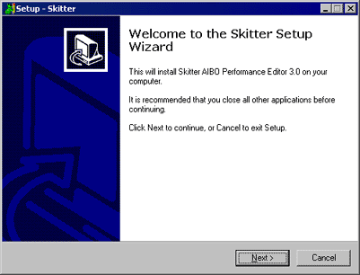
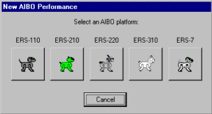
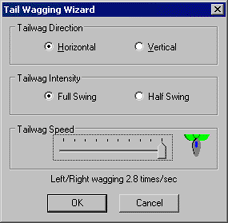

|
|
| Skitter Tutorial #1 - Create
Your First Skit! |
Contents of this website are freeware and/or copyrighted material, and may not be sold
under any circumstances.
Email: dogsbody@dogsbodynet.com
Home:
https://dogsbodynet.com
|
Creating Your First Skit!
Any AIBO owner has probably noticed that AIBO moves!
AIBO moves a lot in fact. It walks, scratches itself,
chases
pink balls and does all sorts of other stuff. Besides
walking, most AIBO movement is controlled by skits, made with a program
like Skitter.
In
this tutorial, we focus on creating a simple skit. The next tutorial covers dressing things up with
lights/LED's & sound.
Our goals are:
So you want to make AIBO do something? No
problem. Let's get started!
|
(1)
|
Install Skitter if you haven't done so
already.
Download the Skitter
Installer
to your PC desktop. Double click the program &
follow the simple step-by-step instructions.
|
 |
|
|
(2)
|
Select the "Start" Menu, then
"Programs", "AIBO Tools", and finally "Skitter".
The
first time you start Skitter, you see the "Welcome to Skitter" window
(see
right).
You're asked if Windows should use Skitter to open AIBO skits.
This only
appears once & you won't be bothered by it again.
Click "OK" (recommended).
|

|
|
|
(3)
|
If you clicked "Skip"
instead, Windows is not
configured. You'll need to start Skitter first, then use "Open" from the toolbar or File Menu.
|
|
|
|
| 2.0
Create an AIBO Performance |
(1)
|
Time to do something
interesting. After starting Skitter, you are asked about creating
a new AIBO performance.
Skitter supports all AIBO models (11x/2x0/31x/7).
Select your favorite AIBO flavor.
|
|
|
| (2)
|
Skitter now displays the
performance editors -- there is one each for Motion, LED's (for
lights), and MIDI
(for sound). The image below shows the ERS-210
editors. For the moment, we can ignore the LED & MIDI
editors.
|
|
|
|
(1)
|
First, let's make the motion editor
bigger. Click on the toolbar "Motion"
button. The motion editor fills the Skitter window (see
below).
Down the left side is a list of AIBO's moving joints, or servos.
There are quite a
few -- you might need the scrollbar to see them all.
Below the toolbar, is the 3D AIBO preview, and timeline (or
ruler-bar). If you click-n-drag on the preview, the AIBO
image rotates around for different views.
|
|
|
(2)
|
The preview shows AIBO standing up. In this
performance we need AIBO sitting, so do the following:
- From the Edit Menu, click "Select All".
The editor will turns gray (since everything is selected).
- From the Motion Menu, click "Set Pose",
then "Sit Position".
The AIBO preview should now show AIBO sitting (see right).
|
|
|
(3)
|
We need a keyframe. Keyframes tell AIBO how
to position itself at a given time.
Move the mouse to time "60" (on the
timeline) and left-click. The orange marker
appears. It doesn't need to be exact, but the left/right
arrow keys can fine tune if you like.
Next, from the Motion Menu click "Create Keyframe".
A tab appears under the orange marker (see right). The tab
shows a keyframe was created.
|
|
|
(4)
|
Time
to get our hands dirty. Move the mouse down the
orange marker line until lined up with "Front Left Leg Vertical".
Left-click where the orange & black lines cross. An
orange "edit-diamond" snaps to the intersection. An orange
box also appears next to the servo
title.
Now press [Enter], type in
a value of 90, and [Enter] once more. This adjust
the position to 90 degrees. The small preview also shows
the change.
|
|
|
(5)
|
Punching numbers is a little
tedious. So let's use the "AIBO Window"
instead! From the View menu, click "AIBO Window"
(see
right). You get a bigger AIBO with a media-bar along
the bottom.
Click the pencil icon  in the lower right
to enable editing. in the lower right
to enable editing.
Now just click-n-drag on AIBO's legs & head. Easy
eh? Adjust AIBO until he is waving at you (as
shown). Watch the motion editor while adjusting &
you'll see the values change. Here are settings to aim for:
- "Head Tilt" to be "-15"
- "Head Pan/Yaw" to be "25"
- "Head Roll" to be "19"
(ERS210 / ERS220 only)
- "Mouth" to be "-30"
(ERS210
/ ERS7 only)
- "Front Left Leg Lateral" to be "30"
- "Front Left Leg Knee" to be "110"
Click-n-drag on AIBO's body to rotate & view from
different angles. |
 |
|
|
|
(6)
|
 Only
a couple little things left. We need to make AIBO's front
leg pause slightly so it looks less mechanical. Only
a couple little things left. We need to make AIBO's front
leg pause slightly so it looks less mechanical.
Go back to the Motion Editor, and click on time 60. The tab
turns
green.
Press the toolbar "Copy" button. Click on time 80,
and press the "Paste" button. A copy of our keyframe
appears at time 80.
|
|
|
| (7) |
Finally, let's make AIBO look happy
with some tail wagging (skip for 220/310).
Skitter has
a nifty
tool for this otherwise tedious challenge. From the Motion
menu,
select "Tailwag
Wizard".
Move the "Tailwag Speed" slider fully right. The preview
shows how fast AIBO's tail will move. Feel free to try the
different settings here.
Click OK. Tada! Instant tail wagging.
Don't like the result? Select Undo from the Edit Menu & try again.
|

|
|
|
|
(8)
|
Save it!
Click the toolbar "Save" button. Because this is a
new performance, Skitter asks for a filename.
Save somewhere on your PC -- not the memory stick -- preferably a
folder just for skits. Skitter refers to this as your "action
directory". It's used in the third tutorial when we cover
initializing memory sticks (so AIBO performs for real).
Type "firstwave" (or whatever filename you like) and press
[Enter].
|
|
|
|
|
|
(1)
|
Ok, the moment of truth. Let's
see what its going to look like on AIBO.
Click on the "AIBO Window" -- anywhere but the media-bar.
Click on the move-to-start button
(left-most). You should see
AIBO back in its default sitting position.
|
|
|
|
(2)
|
Now click the green start button  to begin playback. to begin playback.
AIBO should move his arm up to wave, then put it back
down again.
|
|
|
|
(3)
|
Congratulations!
You've finished the first tutorial!
Your first AIBO skit is ready to roll!
Click-n-drag on AIBO to rotate around to different angles. Try
the replay again. Feel free to play around with the media
controls.
Got a question? Ask Dogsbody!
In the next tutorial, we add lights &
sound.
|
|
|
|
|
|
|
|
|
Legalese: These programs are provided AS IS without any warranty, expressed or implied.
This includes without limitation the fitfulness for a particular purpose or
application. People using the software bear all risk
as to its quality and performance. The user of the software
is responsible for any damages whether direct, indirect, special,
incidental or consequential arising from a failure of these programs to operate in
any manner desired. Etc, etc...
"AIBO" is a registered trademark of Sony Corporation.
"AIBO Master Studio", "R-Code", and "Memory Stick" are trademarks of Sony Corporation.
|
|